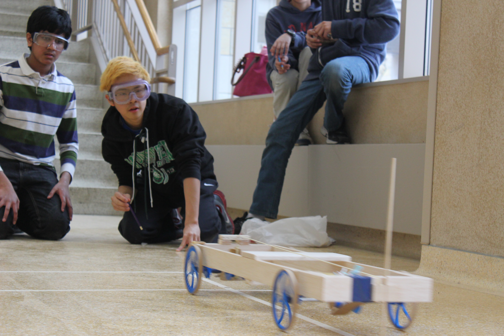
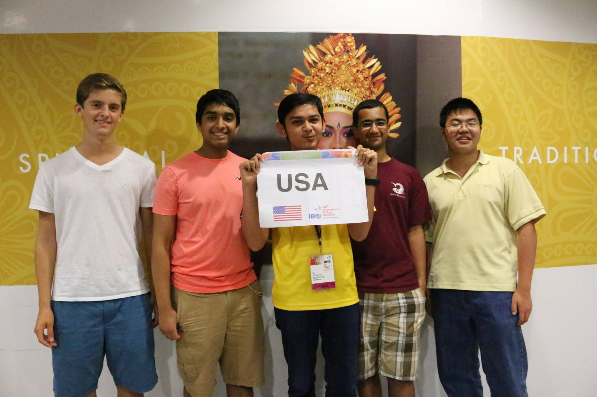

Are you cruising through your biology course and want to go above and beyond? Biology competitions are a great way to pursue your interests and learn so much more. Below, we've listed a few competitions that either we've participated in, or we've had friends who've participated in. If you want to know more about how to prepare for a competition or how to get your school to offer it, feel free to contact us.
Team Competitions
Science Olympiad
Website: soinc.org
Science Olympiad is a competition where students compete in teams of 15 to participate in about 25 events. These events range from study events like Anatomy and Physiology to building events like Elastic Launch Glider. Several of the events focus on subjects in biology. This competition is a lot of fun because people compete in pairs or groups of 3 on each event.
Science Bowl
Website: science.energy.gov/wdts/nsb/
Science Bowl is a competitions where students forms teams of three to answer quizbowl style questions in a variety of broad topics such as Biology, Chemistry, and Earth Science. This competition is fun and fast-paced, testing a variety of science subjects.
Individual Test Competitions
USA Biology Olympiad
Website: usabo-trc.org
The USA Biology Olympiad competition consists of three rounds of testing, culminating in the selection of four students to represent the USA at the International Biology Olympiad. While the first two rounds are proctored at the students' schools, the third round consists of a two week training camp at Purdue University followed by practical and theoretical testing. The USABO is the most prestigious and competitive test-based biology competition in the United States.
Brain Bee
Website: sfn.org/public-outreach/education-programs/brain-bee/
The Brain Bee is an international test based competition on neuroscience. State winners compete at the National tournament for a spot representing the United States at the International Brain Bee. Parts of the competition include an anatomy test using real brain slices and sections, a neurohistology component, and a patient diagnosis test for common neurological disorders.
University of Toronto National Biology Competition
Website: biocomp.utoronto.ca/
The Toronto National Biology Competition is open to both students in and out of Canada. For students in Canada, it plays a role in selecting the Canadian team for the International Biology Olympiad like the USA Biology Olympiad does for the United States. For students outside Canada, it exists as a standalone biology competition. While this competition isn't as difficult as the USA Biology Olympiad, it addresses many of the same concepts. Additionally, many USA Biology Olympiad National Finalists participate in this competition.